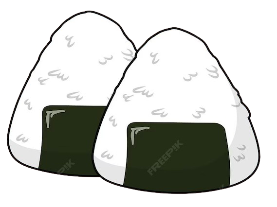

Eten in Japan

Het ontdekken van een nieuwe cultuur gaat vaak hand in hand met het verkennen van de diverse culinaire hoogstandjes die een regio te bieden heeft. Tijdens onze ontdekkingstocht hebben we niet alleen de lokale cultuur ervaren, maar ook de rijke smaken van de keuken mogen proeven. Ik heb een paar van de meest heerlijke en opvallende gerechten die we geproefd hebben, voor je op een rijtje gezet.